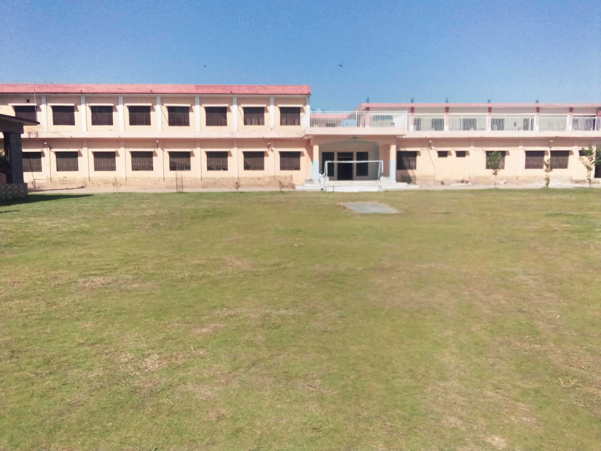

"Education is power and pogress. So enter the college to learn and leave to serve"
WELCOME TO GPGC HARIPUR!
On entering the College, a spacious campus welcomes with its serene & secure environment to the new comers. It was the FIRST college in the area which had been fulfilling the needs of Haripur & its adjusting areas for years. You should, therefore, be proud & equally confident that you have chosen this institution to explore the world of knowledge for your dazzling future.
History
GPGC is rightfully being called the mother of all institution. The people who receive education from this institution enjoy respect & integrity. The faculty is always ready for guidance & co-operation with the youth.
FROM PAST TO PRESENT:
To promote female education & empower women with socio economics development GGC started in 1965 at intermediate level in a rented building, 5 years later it was shifted in the heart of the city on 42 kanals area, which is its present location. Initially, class rooms were built but later a residential area for both students & staff was added. In 1972, the college achieved the status of Degree College. The first institution in the Hazara division for female. In 2011, it was given the status of Post Graduate College in the disciplines of English, Computer Science and Chemistry. In the same year B.S 4 year programme was introduced to bring the college as per with global standards. As majority of students cannot afford the expenses of higher education.
Now this college is successfully running BS programme in 12 Disciplines namely:
COMPUTER SCIENCE
PSYCHOLOGY

CHEMISTRY
BOTANY
ZOOLOGY
ENGLISH
MATHEMATICS
STATISTICS
PAKISTAN STUDIES
ISLAMIYAT
URDU
PHYSICS
This is a golden opportunity forthe students of haripur & hazara division at large which will lead to overall progress and prosperity of the region.
"WE AIM FOR QUALITY EDUCATION"
"Dicipline is not an exterior check.it is infect self control in the absence of exterior face."